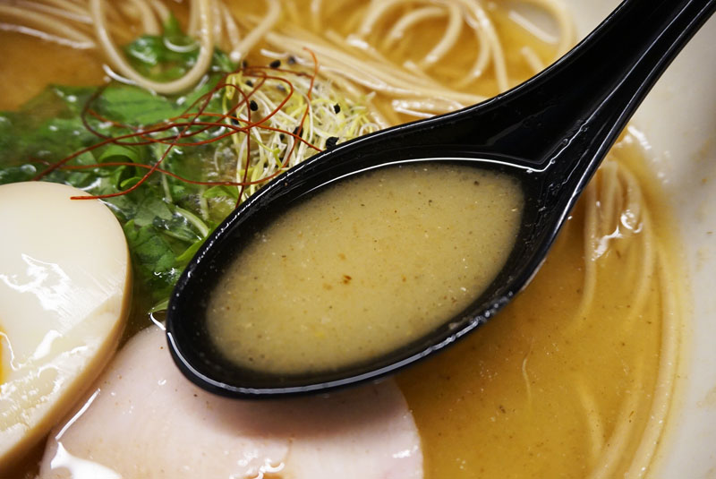

Historia del Ramen
El Ramen, aunque originario de China, se ha convertido en la actualidad en emblema de la cocina japonesa. La base sobre la que se elabora este delicioso plato en ambos países es la misma, fideos de trigo, no obstante, la versión japonesa ofrece una mayor variedad de sabores. Esta mayor diversidad radica en la manera de elaboración de la sopa o caldo, que constituye la esencia del Ramen, así como los ingredientes con los que se la acompaña (huevo cocido, brotes de bambú y de soja, algas, pastel de pescado, cerdo rostizado, jengibre, setas, repollo, verduras hervidas…).
